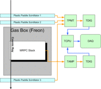
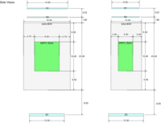
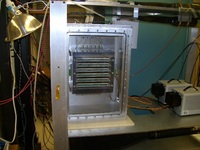

Cosmic Ray Test Stand
Setup
Our cosmic ray test stand setup consists of three paddle shape
plastic scintillators coupled with PMT's, a MRPC stack which can hold up
to six MRPC modules vertically, front end electronics, and a gas
controller. The PMT's are also hooked up to a CAMAC system and its three
fold coincident fires an event, initiates TCPU's data collecting data,
timestamps of hit on MRPC pads from two TDIG's.



Analysis
In this analysis, both start and stop signal are given by MRPC
module, so time difference of more than two pads plays main role here.
Since we require clean tracks which have hit on a same pad of all
four/three modules and have not hit on the other pad of any four/three
modules, there are only six kinds of tracks. It can be indexed by pad
number and does in the following analysis. Besides the track types,
there are other possibilities how time difference calculated out of
four/three timestamps, however, we only use two kinds of them:
- dT(avg) := (<1>+<4>)/2 - (<2>+<3>)/2
- dT(m) := <m> - [average of all modules except module m] (m=1,...,4/3)
Although it is omitted for simplicity, both have track (or pad)
dependency and the second has module dependency too. Therefore,
6+6*4(/3) = 30(/24) variables are subject of the analysis.
Results
Separate result page for each dataset contains a bunch of graphs in a
more or less same format without any description. Please consult a brief
description of each components presented here.
- Packet-wise Analysis
- Packet ID Distribution: The histogram shows packet ID distribution
of all packets in the dataset subject to analysis. Packets from both
TDIG#0 (PMT) and TDIG#2 (MRPC) are accumulated.
- Channel Distribution: Total number of leading and trailing edge
packet is shown. Channel range corresponding to TDIG#2 is drawn.
- Hits/events ratio: This pad to pad map shows ratio of total hits
on each pad to total number of events. Four red boxes on corners are
artificial struts for the map being drown in a same scale.
- dT Distributions (rev=1)
The section shows all histograms of two kinds of dT's defined
above before slewing correction process.
- Slewing Correction
dT vs ToT histogram, its profile on x-axis (ToT), and fit result
are displayed in a single graph for all pads and all steps of the
correction process. Unit of the graphs is "bin size"=24.4ps
(=25ns/1024). Fit functions are "pol9" or "expo+const."
- dT Distributions (rev=4 or more)
Histograms of dT distribution after the slewing correction are in
the section. Final revision number depends on how many modules are
included and also how many iterations are done in the correction.
- Summary
- A text report listed some basic stats like run time, total
events, total number of tracks, and also weighted pad average of
timing resolutions based on two different kinds of dT's, dT(avg) and
dT(m). Again, the latter has module dependence, so 5(/4) timing
resolutions are there.
- Pad dependent timing resolutions for the two kinds of dT's are
drawn as connected plots in a single graph.


{kind=link}
{kind=link}
{kind=link}